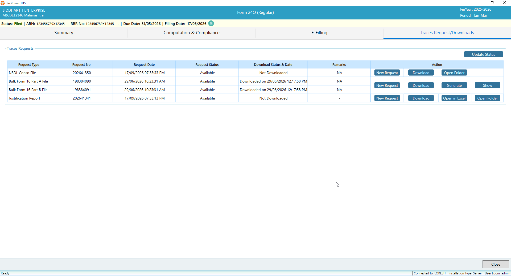
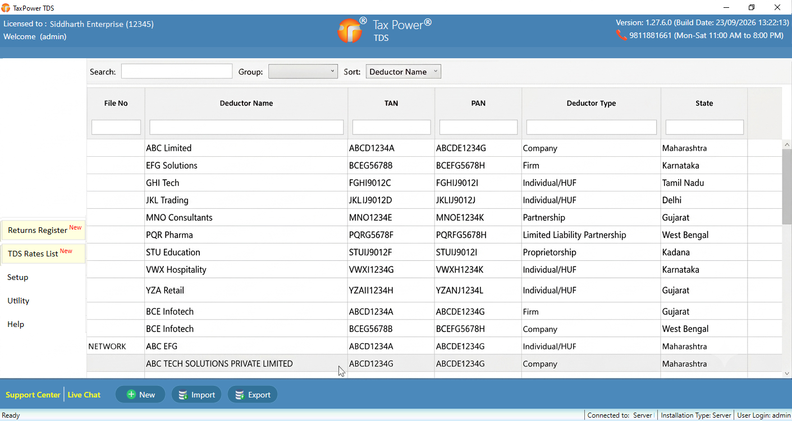
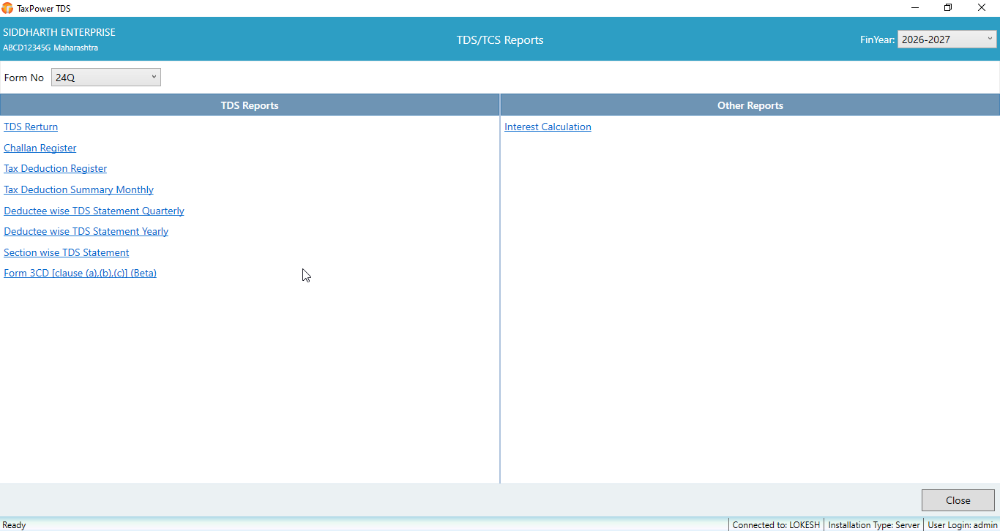
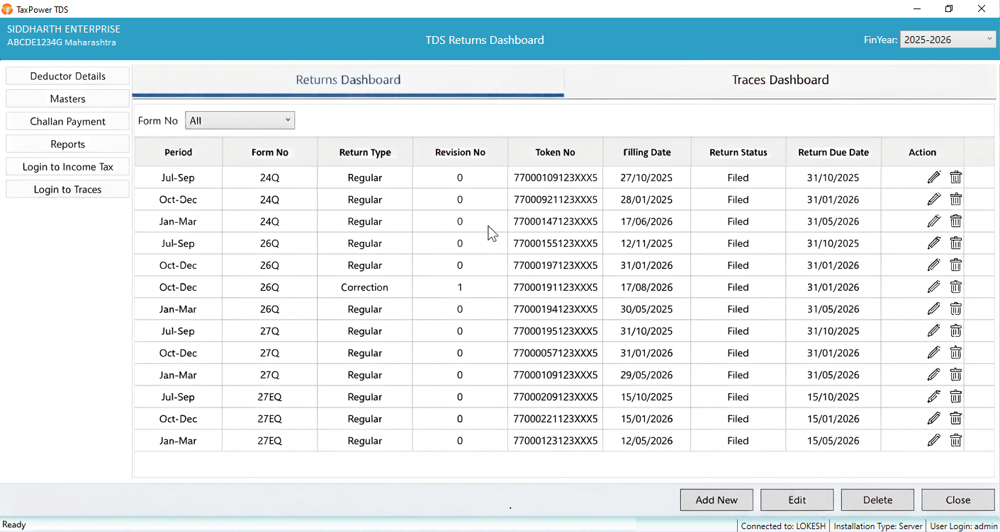
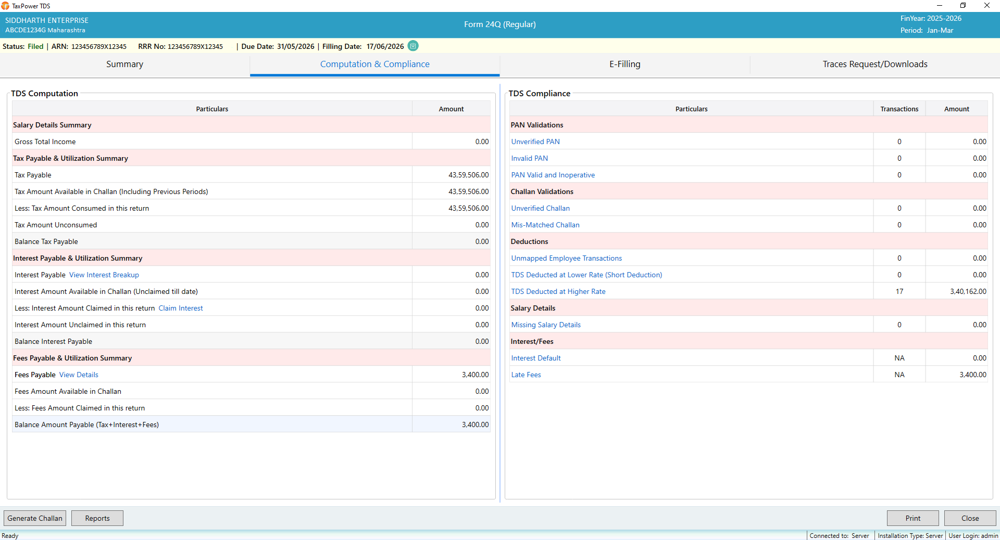
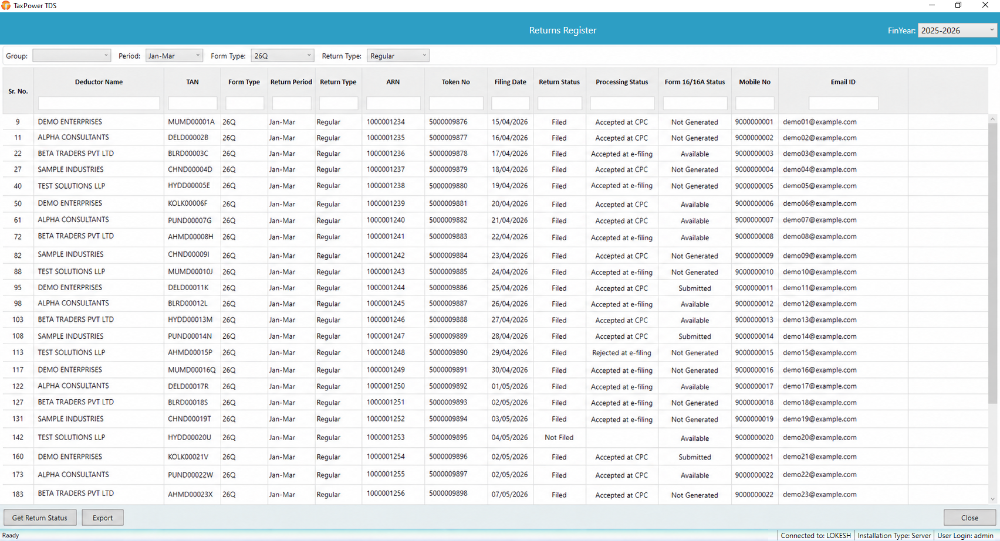

TaxPower TDS
TRACES Activity
Request Conso files, download certificates and access Justification Reports. Track request availability and download status in one place.

Automate your TDS & TCS compliance, from preparation to filing.
Prepare returns, generate FVU files and manage challans, TRACES and certificates in one workspace.
Select a form and start the demo.
Import Challan
e-Filing / TRACES / NSDL BIN
Certificate Direct Mail
Form 16 / 130 · Form 16A / 131 · Form 27D / 133
Email certificates to employees & deductees
Returns & reports
Regular and correction returns, PAN & FVU Validation, e-Filing & TRACES Integration
TaxPower TDS Software
Manage deductors, access client details and start your TDS return work—all from one organised workspace.

Request Conso files, download certificates and access Justification Reports. Track request availability and download status in one place.

Access challan and tax deduction registers, monthly summaries, deductee-wise statements, section-wise reports and interest calculations.

Discover the tools that make TDS compliance simpler, faster, and easier to manage.

Manage regular and correction returns with filing details, due dates and status in one clear view.

Review tax calculations and compliance checks together before moving ahead with your return.

Track returns across deductors, review processing progress and keep filing records close at hand.